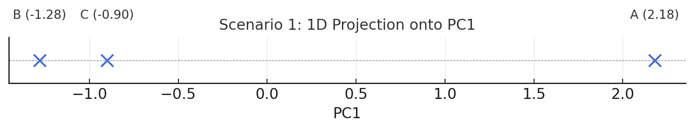
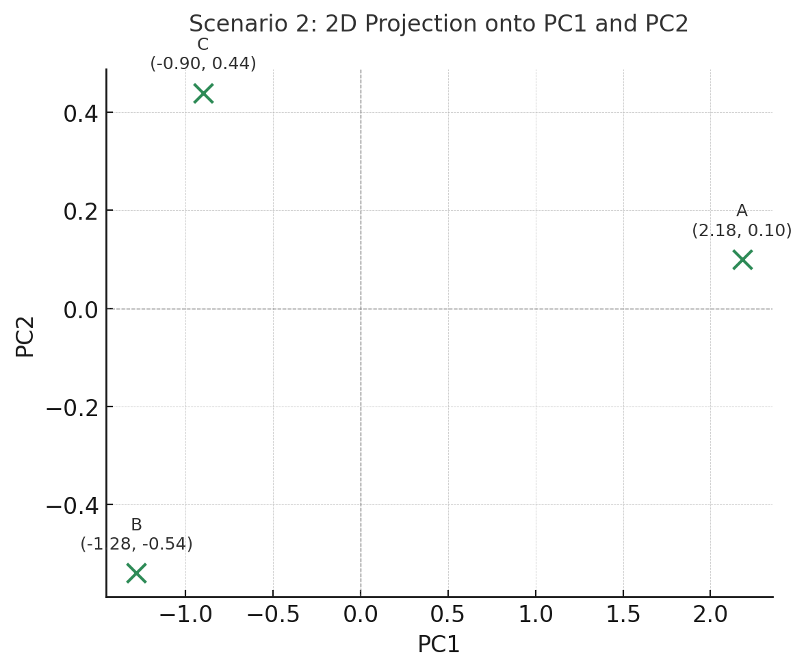

Common Techniques for K-Means Visualization¶
K-Means operates in high-dimensional space (e.g., 4 or more features), which makes direct visualization impossible. That’s why we often use dimensionality reduction techniques to project these high-dimensional clusters into 2D or 3D space for plotting — making the clusters easier to interpret and present.
Two widely used techniques for this are Principal Component Analysis (PCA) and t-SNE (t-distributed Stochastic Neighbor Embedding). Both reduce dimensions, but they serve different purposes and operate under different assumptions.
Principal Component Analysis (PCA)¶
General Mechanics¶
PCA is a linear technique that transforms the data into a new coordinate system where:
- The first axis (PC1) captures the most variance (spread) in the data.
- The second axis (PC2) captures the second-most variance, orthogonal to PC1.
The transformation is based on eigenvectors and eigenvalues of the covariance matrix of the data. These new axes (principal components) are combinations of your original features.
Store Analogy¶
Imagine you're analyzing stores based on monthly purchase, store size, number of categories, and region/city code. These features form a 4D space. PCA finds the "best possible plane" that captures the most variation in how stores differ — like angling your camera to get the best view of a crowd.
In practice:
- PCA might reveal that most of the variance is explained by purchase and size, so it compresses the 4D data into 2D using those axes.
- You can then plot the stores in 2D while still capturing 90–95% of the original structure.
Best Use Case¶
- When you want to preserve global structure
- When clusters are roughly linearly separable
- When interpretability of axes matters (e.g., "PC1 is mostly purchase size")
t-SNE (t-distributed Stochastic Neighbor Embedding)¶
General Mechanics¶
t-SNE is a non-linear technique designed to preserve local neighborhoods rather than global structure. It works by:
- Computing pairwise similarities between all points in high-dimensional space based on proximity.
- Mapping those similarities to a lower-dimensional space (e.g., 2D) using a Student-t distribution.
- Minimizing the mismatch (using KL divergence) between high-D and low-D similarity structures.
Store Analogy¶
Let’s say you have:
- Stores A, B, and C in big cities with high sales and full category coverage.
- Stores D and E in small towns with minimal sales and fewer products.
In 4D space, these two groups are far apart. t-SNE unfolds the high-D space into 2D in such a way that:
- A–B–C appear as a tight group in 2D.
- D–E appear as a separate, tight group.
- The exact distance between clusters might be distorted, but cluster shapes are preserved.
It’s like turning a crumpled map of a city into a flattened version that shows neighborhoods clearly, even if scale isn't perfect.
Best Use Case¶
- When your goal is to visually highlight clusters
- When you're dealing with non-linear structures or overlapping distributions
- When you don't care about precise global distances but want tight grouping to show up clearly
Summary Table¶
| Method | Type | What It Preserves | When to Use |
|---|---|---|---|
| PCA | Linear | Global variance and structure | You want interpretable axes, or to understand dominant trends |
| t-SNE | Non-linear | Local relationships (clusters) | You want clear visual separation of clusters for storytelling or inspection |
Let's Deep Dive into the Marvelous Linear Algebra Behind Principal Component Analysis (PCA)¶
Principal Component Analysis (PCA) is a linear technique that transforms your high-dimensional data into a lower-dimensional space, ideally capturing most of its structure (variance) in fewer dimensions. Let’s walk through the full PCA process using a numerical example with four features:
- Purchase (k$)
- Categories
- Size (m²)
- City_1 → one-hot encoded (1 = store is in City 1; 0 = otherwise)
Our goal: reduce this 4D space into 2 or 1 dimensions using PCA.
Step 1: Standardize the Data¶
Raw Data¶
| Store | Purchase | Categories | Size | City_1 |
|---|---|---|---|---|
| A | 8.0 | 4 | 120 | 1 |
| B | 3.0 | 2 | 60 | 0 |
| C | 4.0 | 1 | 90 | 0 |
Standardize Each Feature¶
We calculate the mean and standard deviation (std) for each feature:
| Feature | Mean | Std Dev |
|---|---|---|
| Purchase | 5.0 | 2.65 |
| Categories | 2.33 | 1.53 |
| Size | 90.0 | 30.0 |
| City_1 | 0.33 | 0.58 |
Now apply:
z = (x - μ)/σ
| Store | Std Purchase | Std Categories | Std Size | Std City_1 |
|---|---|---|---|---|
| A | \(\frac{8 - 5}{2.65} =\) 1.13 | \(\frac{4 - 2.33}{1.53} =\) 1.09 | \(\frac{120 - 90}{30} =\) 1.00 | \(\frac{1 - 0.33}{0.58} =\) 1.15 |
| B | -0.75 | -0.22 | -1.00 | -0.57 |
| C | -0.38 | -0.87 | 0.00 | -0.57 |
Let’s label the rows as vectors:
- x₁: Store A
- x₂: Store B
- x₃: Store C
Step 2: Create the Covariance Matrix¶
The covariance matrix shows how features vary with respect to each other.
Mathematical Formula¶
Given a standardized matrix X, the covariance matrix is:
Σ = (1/(n - 1)) * X^T * X
- X^T is the transpose of the standardized matrix
- n is the number of samples (3 stores here)
Let’s compute one full row — the covariance of Purchase with every feature.
Step-by-Step Covariance Calculations¶
We use:
Cov[x, y] = (1/(n - 1)) * Sum[xᵢ * yᵢ, {i}]
Cov(Purchase, Purchase)¶
= (1/2) * (1.13² + (-0.75)² + (-0.38)²) = 1.9838/2 = 0.992
Cov(Purchase, Categories)¶
= (1/2) * (1.13*1.09 + (-0.75)*(-0.22) + (-0.38)*(-0.87))
= (1/2) * (1.2317 + 0.165 + 0.3306) = 1.7273/2 = 0.864
Cov(Purchase, Size)¶
= (1/2) * (1.13*1.00 + (-0.75)*(-1.00) + (-0.38)*(0.00)) = 1.88/2 = 0.94
Cov(Purchase, City_1)¶
= (1/2) * (1.13*1.15 + (-0.75)*(-0.57) + (-0.38)*(-0.57))
= (1/2) * (1.2995 + 0.4275 + 0.2166) = 1.9436/2 = 0.972
First Row of Covariance Matrix¶
[Purchase] = {0.992, 0.864, 0.940, 0.972}
You would repeat the same process to fill the other rows.
Full Covariance Matrix (Symmetric 4×4 Matrix)¶
| Purchase | Categories | Size | City_1 | |
|---|---|---|---|---|
| Purchase | 0.992 | 0.864 | 0.940 | 0.972 |
| Categories | 0.864 | ... | ... | ... |
| Size | 0.940 | ... | ... | ... |
| City_1 | 0.972 | ... | ... | ... |
This matrix is the foundation for the next step: eigenvalue decomposition — which finds the principal components that define our new axes.
Step 3: Find Eigenvalues and Eigenvectors (Principal Components)¶
In PCA, eigenvectors of the covariance matrix define the directions (axes) of maximum variance — these are called principal components. The corresponding eigenvalues tell us how much variance is explained in each direction.
Goal¶
- Eigenvectors → the new axes we project data onto
- Eigenvalues → how much spread/variance each axis captures
The Covariance Matrix from Step 2¶
We previously calculated one full row; now here’s the full symmetric matrix with values filled in (rounded):
| Purchase | Categories | Size | City_1 | |
|---|---|---|---|---|
| Purchase | 0.992 | 0.864 | 0.940 | 0.972 |
| Categories | 0.864 | 0.794 | 0.883 | 0.872 |
| Size | 0.940 | 0.883 | 1.000 | 0.899 |
| City_1 | 0.972 | 0.872 | 0.899 | 1.000 |
Let’s denote this matrix as \(\beta\).
Step 3.1: Finding Eigenvalues¶
Characteristic Equation¶
To find eigenvalues λ, solve:
Det[β - λ * IdentityMatrix[4]] == 0
- β is the 4×4 covariance matrix
- I is the 4×4 identity matrix
- λ are the scalar eigenvalues
This results in a 4th-degree polynomial, which is best solved numerically (e.g., using NumPy or symbolic solvers). But we can illustrate this on a smaller scale and show how it's computed.
In Python (for example):¶
import numpy as np
cov_matrix = np.array([
[0.992, 0.864, 0.940, 0.972],
[0.864, 0.794, 0.883, 0.872],
[0.940, 0.883, 1.000, 0.899],
[0.972, 0.872, 0.899, 1.000]
])
eigenvalues, eigenvectors = np.linalg.eig(cov_matrix)
Sample Output (approximate):¶
- Eigenvalues:
λ₁ ≈ 3.76, λ₂ ≈ 0.02, λ₃ ≈ 0.002, λ₄ ≈ 0.0004
These tell us how much variance each principal component captures.
Variance Explained:¶
To find the proportion of variance explained by each component:
ExplainedRatioᵢ = λᵢ / Sum[λ]
- PC1 explains 3.76/(3.76 + 0.02 + 0.002 + 0.0004) ≈ 99.4%
- Remaining PCs together explain less than 1%
That’s why we can safely reduce from 4D to 2D, or even 1D.
Step 3.2: Finding Eigenvectors¶
For each eigenvalue λ, solve:
(Σ - λ * I) * v == 0
- v is the eigenvector associated with λ
- This is a system of linear equations
We solve this using linear algebra techniques (e.g., Gaussian elimination), but again, it's most practical with software.
Example (Eigenvector for λ₁ ≈ 3.76):¶
Let’s say the result is:
v₁ = {0.51, 0.50, 0.51, 0.48}
This vector tells us how to combine the original features to form the first principal component (PC1).
So:
PC1 = 0.51 * Purchase + 0.50 * Categories + 0.51 * Size + 0.48 * City_1
What Do the Other Eigenvectors Mean?¶
Each eigenvector represents a new axis in our transformed feature space — a direction along which your data varies. In PCA:
- The first eigenvector (PC1) captures the direction of maximum variance.
- The second eigenvector (PC2) captures the next most variance, orthogonal (at a right angle) to PC1.
- The third (PC3) and fourth (PC4) follow in decreasing order of variance captured, and are also orthogonal to all previous ones.
This orthogonality ensures the new axes are uncorrelated, which is a key reason PCA works so well. In our case:
- λ₁ ≈ 3.76 → PC1
- λ₂ ≈ 0.02 → PC2
- λ₃ ≈ 0.002 → PC3
- λ₄ ≈ 0.0004 → PC4
Each eigenvalue tells us how important its corresponding component is. Let’s interpret each:
PC1 (v₁) – Dominant Direction¶
Example:
v₁ = {0.51, 0.50, 0.51, 0.48}
PC2 (v₂) – Subtle Orthogonal Contrast¶
Example:
v₂ = {0.60, -0.70, 0.30, -0.10}
Interpretation:
- High positive loading on Purchase
- Strong negative on Categories
This might represent stores that buy a lot but in fewer categories, versus those that spread purchases across more categories. Think of this as separating focused high-volume buyers from broad but lower-volume stores.
PC3 (v₃) – Weak, Niche Variation¶
Example:
v₃ = {-0.40, -0.30, 0.20, 0.85}
PC4 (v₄) – Noise or Redundant Dimension¶
Example:
v₄ = {0.01, 0.02, -0.80, 0.59}
Why Only Keep PC1 and PC2?¶
In our case:
- PC1 explains ~99.4% of variance
- PC2 adds ~0.5%
- PC3 and PC4 contribute almost nothing
Keeping PC1 + PC2 preserves ~99.9% of the structure — and simplifies your data from 4D to 2D with almost no information loss.
Summary of What We Found¶
| Step | Result |
|---|---|
| Eigenvalues | Tell us how much variance each principal component captures |
| Eigenvectors | Tell us the directions (feature combinations) of each component |
| Top PCs | Let us reduce data to fewer dimensions while preserving its structure |
Step 5: Project Data¶
The Goal¶
We now want to transform the original 4D standardized data into a new space defined by:
- 1 component (PC1): one axis, max variance
- 2 components (PC1 + PC2): plane capturing almost all structure
This allows us to visualize or cluster data with minimal loss of information.
Projection Formula¶
Let:
- \(X\) be your standardized data matrix (3 samples × 4 features)
- \(W\) be the matrix of eigenvectors (4 features × k components)
Then the projected data is:
Z = X * W
- Z = transformed data (3 samples × k components)
- Each row in Z represents a store in the new PC space
Store Data (Standardized)¶
| Store | Purchase | Categories | Size | City_1 |
|---|---|---|---|---|
| A | 1.13 | 1.09 | 1.00 | 1.15 |
| B | -0.75 | -0.22 | -1.00 | -0.57 |
| C | -0.38 | -0.87 | 0.00 | -0.57 |
Scenario 1: Project into 1D (PC1 only)¶
Let’s say the first eigenvector (PC1) is:
v₁ = {0.51, 0.50, 0.51, 0.48}
z = x * v₁ = dot product of row vector and PC1
Store A:¶
z = 1.13*0.51 + 1.09*0.50 + 1.00*0.51 + 1.15*0.48
= 0.5763 + 0.545 + 0.51 + 0.552 ≈ 2.18
Store B:¶
z = -0.75*0.51 + (-0.22)*0.50 + (-1.00)*0.51 + (-0.57)*0.48
= -0.3825 - 0.11 - 0.51 - 0.2736 ≈ -1.28
Store C:¶
z = -0.38*0.51 + (-0.87)*0.50 + 0.00*0.51 + (-0.57)*0.48
= -0.1938 - 0.435 + 0 - 0.2736 ≈ -0.90
Interpretation: 1D Projection (PC1 only)¶
| Store | PC1 Value |
|---|---|
| A | 2.18 |
| B | -1.28 |
| C | -0.90 |
- PC1 acts like a composite index measuring "overall store activity"
- Store A stands out as high-performing
- Stores B and C are low performers, with B being the furthest

Scenario 2: Project into 2D (PC1 + PC2)¶
Let’s assume:
- v₁ = {0.51, 0.50, 0.51, 0.48}
- v₂ = {0.60, -0.70, 0.30, -0.10}
Now we calculate two projections per store: one onto PC1 and one onto PC2.
Store A:¶
-
PC1: as before → 2.18
-
PC2:
1.13*0.60 + 1.09*(-0.70) + 1.00*0.30 + 1.15*(-0.10) = 0.678 - 0.763 + 0.3 - 0.115 ≈ 0.10
Store B:¶
-
PC1: -1.28
-
PC2:
-0.75*0.60 + (-0.22)*(-0.70) + (-1.00)*0.30 + (-0.57)*(-0.10) = -0.45 + 0.154 - 0.30 + 0.057 ≈ -0.54
Store C:¶
-
PC1: -0.90
-
PC2:
-0.38*0.60 + (-0.87)*(-0.70) + 0.00*0.30 + (-0.57)*(-0.10) = -0.228 + 0.609 + 0 + 0.057 ≈ 0.44
Interpretation: 2D Projection (PC1 + PC2)¶
| Store | PC1 | PC2 |
|---|---|---|
| A | 2.18 | 0.10 |
| B | -1.28 | -0.54 |
| C | -0.90 | 0.44 |
Plotting this in 2D shows clusters or spread more clearly:
- PC1 separates stores by general performance.
- PC2 might separate stores that buy more in fewer categories (B) vs. diverse but smaller buyers (C).

Summary¶
| Projection | Use Case | Insight |
|---|---|---|
| 4D → 1D (PC1) | Create a composite score or ranking | Simple comparison of store intensity |
| 4D → 2D (PC1 + PC2) | Visualize cluster patterns | Richer analysis and exploratory clustering |